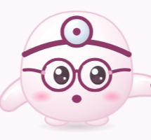

Esboço — nada implementado. A, B, C, D do S89 aprovados (fica para depois do seu teste na loja).
1 · se apresenta
≡ LA FOUCH 🛒
‹ Início

Oi! Eu sou o Mochi. Vou te ajudar a achar o grau do seu óculos de leitura.
Serve só para ler de perto.
Não funciona para miopia, astigmatismo ou multifocal.
Não substitui a consulta.
Começar
2 · aponta o cartão e explica
≡ LA FOUCH 🛒
‹ Início
Antes, um aviso importante: este teste é só para óculos de leitura. Não serve para miopia, astigmatismo nem multifocal, e não substitui o oftalmologista.
Serve só para ler de perto.
Não funciona para miopia, astigmatismo ou multifocal.
Não substitui a consulta.
Começar
O cartão ganha um contorno rosa que pulsa enquanto ele fala; ele aponta com a mão (sem o ponteiro), de cima, sem encostar no texto.
3 · chama o Começar (uma vez)
≡ LA FOUCH 🛒
‹ Início
Quando quiser, é só tocar em Começar.
Serve só para ler de perto.
Não funciona para miopia, astigmatismo ou multifocal.
Não substitui a consulta.
Começar
O botão pulsa 2 vezes. Depois ele não fala mais (fica vivo ao lado).
Ordem nova da entrada
1. "Oi! Eu sou o Mochi. Vou te ajudar a achar o grau do seu óculos de leitura."
2. O cartão do aviso acende e ele explica: "Antes, um aviso importante: este teste é só para óculos de leitura. Não serve para miopia, astigmatismo nem multifocal, e não substitui o oftalmologista."
3. "Quando quiser, é só tocar em Começar." (o botão pulsa)
• O botão Começar funciona desde o início (quem já conhece pode tocar antes; aí ele para de falar no fim da frase).
• Substitui o "balão só se apresenta" do S67 (você agora quer o aviso falado).
• Frases novas para gravar: a do aviso (PT e ES).
1 · explica antes de pedir
≡ LA FOUCH 🛒
‹ Início
Posso usar a câmera? É só para medir a distância do celular até o seu rosto. Nada é gravado. Se preferir, a gente faz sem.
📷 Câmera só para medir a distância
Nada é gravado nem enviado.
Usar a câmera
Fazer sem câmera
2 · espera a pessoa decidir
≡ LA FOUCH 🛒
‹ Início
É só tocar em "Permitir" na janelinha.
📷 lafouch.com quer usar sua câmera
PermitirBloquear
Enquanto a janelinha do celular está aberta, o Mochi espera: não fala mais nada e o teste não começa.
3a · permitiu
≡ LA FOUCH 🛒
‹ Início31 cm ✓
Obrigado! Faz como eu: tire os óculos…
Segue para o preparo normal.
3b · bloqueou ou "sem câmera"
≡ LA FOUCH 🛒
‹ InícioSegure a 30 cm
Tudo bem, sem problema! Vamos sem a câmera: segure o celular a uns 30 centímetros, um palmo.
Teste funciona igual, com a letra no tamanho de 30 cm. Nunca insiste.
Regras
• A janelinha do celular só aparece depois que ele explica e a pessoa toca em "Usar a câmera".
• Se o celular já tem a permissão (pessoa já aceitou antes), pula a pergunta.
• Se já bloqueou antes, vai direto para "sem câmera" com a mesma frase gentil.
• Sem câmera não há ajuste de letra pela distância nem a etapa do ponto próximo (C do S89).
hoje · o menu abre POR BAIXO da consulta
≡ LA FOUCH 🛒
‹ Início
Descubra o grau…
Causa: a consulta fica embaixo do cabeçalho, e o menu abre atrás dela. Só aparece o pedaço no lugar do cabeçalho, que fica escuro.
proposto · o menu abre POR CIMA, inteiro
≡ LA FOUCH 🛒
‹ Início
Leitura ›
Armações ›
Solar ›
Ferramentas
Descubra o seu grau ✓
O menu cobre tudo como em qualquer página; a consulta fica pausada atrás (Mochi para de falar).
O que acontece depois
• Escolheu outra página (ex.: Armações): a consulta fecha e abre a página escolhida.
• Fechou o menu (tocou fora ou ✕): volta para a consulta exatamente onde estava, e o Mochi retoma.
• Tocou em "Descubra o seu grau": só fecha o menu.
• Lupa e carrinho do cabeçalho seguem a mesma regra (abrem por cima; fechar volta para a consulta).
Teste antes de publicar: abrir o menu, a busca e o carrinho em cada etapa da consulta (entrada, câmera, teste, lente, resultado), no celular pequeno e grande, com letra grande.